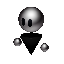
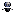
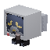
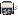
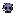
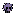
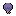
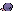
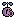
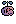

Personagens
“0x43” / “C”

O ser que te conecta a este mundo, computador da marca "Ventana" dos anos 2000 que tem imunidade a infecção, por que não possui o sistema de UEFI.
Ele tem um mouse que ele utiliza de arma e um livro de feitiços, que permite ele criar feitiços com programação em código.
“U+002A” / “*”


É o ser que te guia neste mundo infectado, tem uma forma de fada, mas se revela ser um pendrive que possui a cura para a destruição da infecção.
Computadores
Computador Ancião


O computador com mais sabedoria.
Computador Morto / “0x37”
Um cadáver abandonado, encontrado por 0x43 após fugir de um enxame de vírus, possuía um mouse em suas mãos.
Porteiro
Computador que guarda a saída da vila Byte.
Vírus
“Olhos”


O mais fraco deles, aparece por todo lugar, não infectou nenhum computador ainda.
Possui apenas olhos que choram lágrimas de █████ e um corpo corrompido com poligonos. Inspirado em um personagem próprio.
Infectado
Computador Moderno que foi infectado, possui um virus no seu interior.
Possui um numero elevado de vida por conta de seu corpo metalico e aparece em lugares que outros computadores vivem.
“Boca”


Um vírus orbe que possui a abilidade de sobrevoar areas e não pode ser atacado pelo mouse.
Tem um visual inspirado no Olho do Chuthulu do terraria, com uma grande boca e entranhas para fora de seu corpo.
“Atirador”


Tem um comportamento parecido ao Vírus Boca, porem tem a abilidade de disparar projeteis.
Aparece a partir da Terra das Memorias e tem um design inspirado na Peashooter do Plants vs Zombies.
YAAI
Anda em bandos em circula suas presas, lentamente da dano ao Jogador e invade seu inventario se multiplicando. Inspirado no vírus real "You are an idiot" dos anos 2000.
Bosses
Arc-8

Um robô de combate de um jogo de Arcade. Na bossfight, o mundo ao seu redor vira um fliperama antigo, e você tem que fazer o robô destruir as caixas para enfraquecê-lo e bater nele.